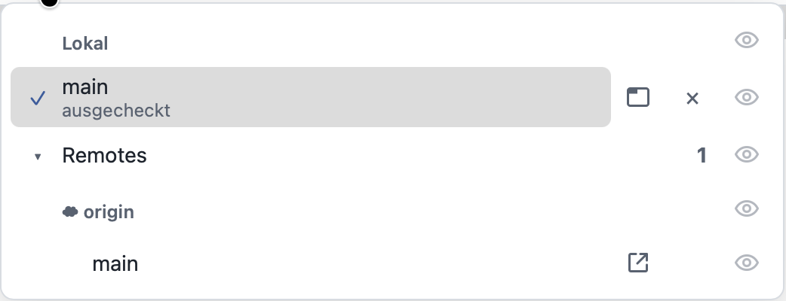
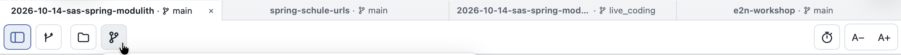
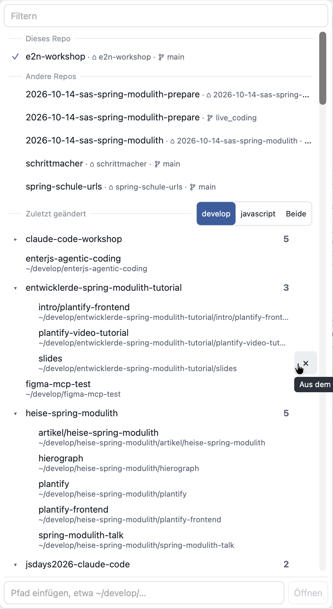

Beides im Stil von 1a. Klick auf einen lokalen Branch setzt das Häkchen, Augen und Gruppen sind schaltbar, Zeilenaktionen erscheinen beim Hover.
Aktueller Stand zum Vergleich.

Augen in einer festen Spalte rechts. Fenster, × und Link nur beim Hover, damit die Liste ruhig bleibt.
Leiste 32 px statt rund 48 px hoch. Icons 15 px in 24-px-Buttons ohne Rahmen, Gruppen durch feine Trennlinien. Repos und Branches tragen einen kleinen Pfeil, weil sie Menüs öffnen. Die Tabs sind unverändert und dienen nur als Kontext.

Drei Richtungen für Schrift, Farbe und Hierarchie. Struktur und Inhalte bleiben wie im Original. Filter, Gruppen, Umschalter, Ausschließen (×) und Pfadfeld sind klickbar.
Aktueller Stand zum Vergleich.

Systemschrift (SF Pro). Namen fast schwarz in Medium, Metadaten in einer eigenen Zeile, Branch als Chip. Blau nur für Auswahl und Aktion.
Geist für Namen, Geist Mono für alles Technische. Branch rechtsbündig als farbiger Tag: main in Bernstein wie im Commit-Log, andere Branches violett.
IBM Plex Sans mit JetBrains Mono, helle Schrift auf Anthrazit. Hebt sich als schwebendes Panel klar von der hellen App ab, ähnlich einer Befehlspalette.